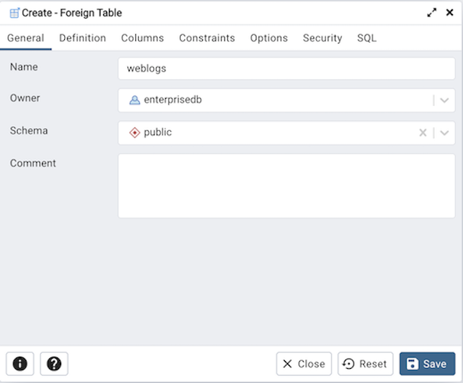
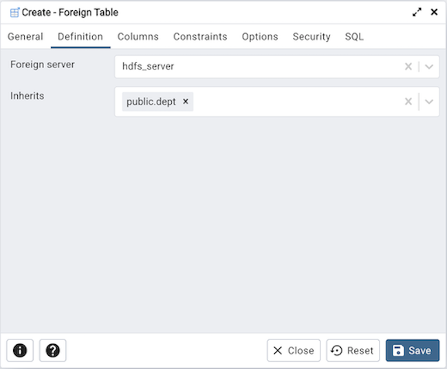
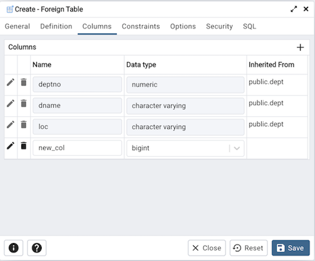
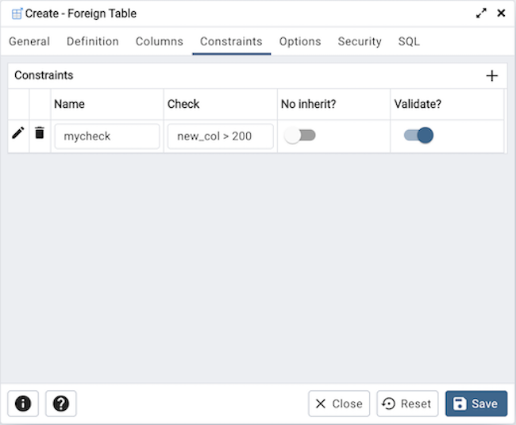
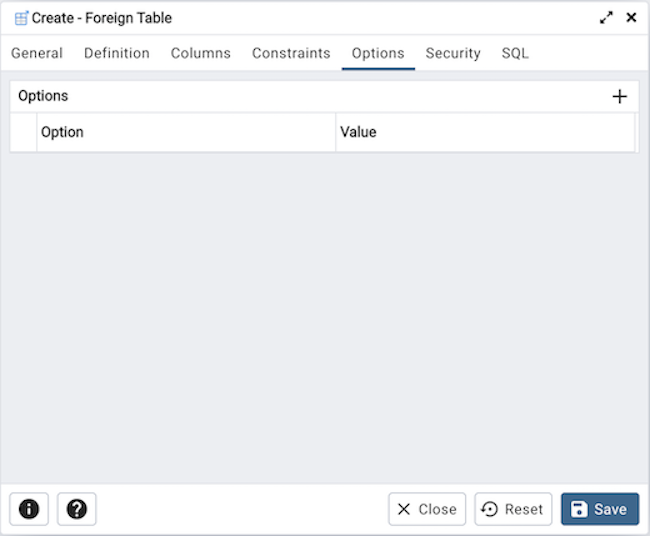
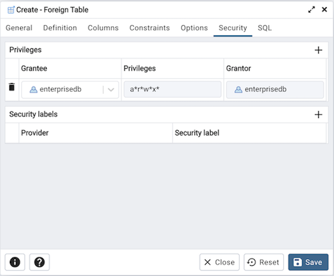
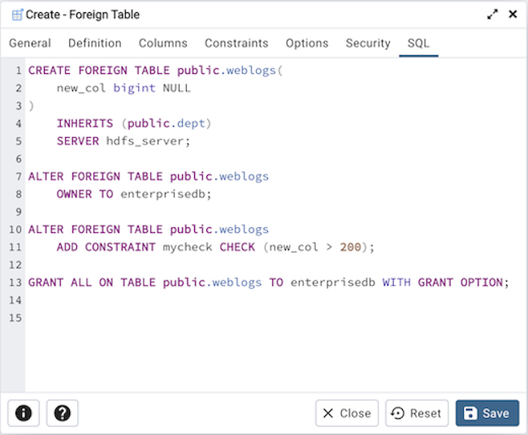

Foreign Table Dialog¶
Use the Foreign Table dialog to define a foreign table in the current database. Foreign tables define the structure of an external data source that resides on a foreign server.
The Foreign Table dialog organizes the development of a foreign table through the following dialog tabs: General, Definition, Columns, Constraints, Options, and Security. The SQL tab displays the SQL code generated by dialog selections.
Use the fields in the General tab to identify the foreign table:
Use the Name field to add a descriptive name for the foreign table. The name of the foreign table must be distinct from the name of any other foreign table, table, sequence, index, view, existing data type, or materialized view in the same schema. The name will be displayed in the pgAdmin tree control.
Use the drop-down listbox next to Owner to select the name of the role that will own the foreign table.
Select the name of the schema in which the foreign table will reside from the drop-down listbox in the Schema field.
Store notes about the foreign table in the Comment field.
Click the Definition tab to continue.
Use the fields in the Definition tab to define the external data source:
Use the drop-down listbox next to Foreign server to select a foreign server. This list is populated with servers defined through the Foreign Server dialog.
Use the drop-down listbox next to Inherits to specify a parent table. The foreign table will inherit all of its columns. This field is optional.
Click the Columns tab to continue.
Use the fields in the Columns tab to add columns and their attributes to the table. Click the Add icon (+) to define a column:
Use the Name field to add a descriptive name for the column.
Use the drop-down listbox in the Data Type field to select a data type for the column. This can include array specifiers. For more information on which data types are supported by PostgreSQL, refer to Chapter 8 of the core documentation.
Click the Add icon (+) to specify each additional column; to discard a column, click the trash icon to the left of the row and confirm deletion in the Delete Row popup.
Click the Constraints tab to continue.
Use the fields in the Constraints tab to apply a table constraint to the foreign table. Click the Add icon (+) to define a constraint:
Use the Name field to add a descriptive name for the constraint. If the constraint is violated, the constraint name is present in error messages, so constraint names like col must be positive can be used to communicate helpful information.
Use the Check field to write a check expression producing a Boolean result. Each row in the foreign table is expected to satisfy the check expression.
Check the No Inherit checkbox to specify that the constraint will not propagate to child tables.
Uncheck the Validate checkbox to disable validation. The database will not assume that the constraint holds for all rows in the table.
Click the Add icon (+) to specify each additional constraint; to discard a constraint, click the trash icon to the left of the row and confirm deletion in he Delete Row popup.
Click the Options tab to continue.
Use the fields in the Options tab to specify options to be associated with the new foreign table or one of its columns; the accepted option names and values are specific to the foreign data wrapper associated with the foreign server. Click the Add icon (+) to add an option/value pair.
Specify the option name in the Option field. Duplicate option names are not allowed.
Provide a corresponding value in the Value field.
Click the Add icon (+) to specify each additional option/value pair; to discard an option, click the trash icon to the left of the row and confirm deletion in the Delete Row popup.
Click the Security tab to continue.
Use the Security tab to assign privileges and define security labels.
Use the Privileges panel to assign privileges to a role. Click the Add icon (+) to set privileges for database objects:
Select the name of the role to which privileges will be assigned from the drop-down listbox in the Grantee field.
Click inside the Privileges field. Check the boxes to the left of one or more privileges to grant the selected privilege to the specified user.
The current user, who is the default grantor for granting the privilege, is displayed in the Grantor field.
Click the Add icon (+) to assign additional privileges; to discard a privilege, click the trash icon to the left of the row and confirm deletion in the Delete Row popup.
Use the Security Labels panel to define security labels applied to the function. Click the Add icon (+) to add each security label selection:
Specify a security label provider in the Provider field. The named provider must be loaded and must consent to the proposed labeling operation.
Specify a a security label in the Security Label field. The meaning of a given label is at the discretion of the label provider. PostgreSQL places no restrictions on whether or how a label provider must interpret security labels; it merely provides a mechanism for storing them.
Click the Add icon (+) to assign additional security labels; to discard a security label, click the trash icon to the left of the row and confirm deletion in the Delete Row popup.
Click the SQL tab to continue.
Your entries in the Foreign Table dialog generate a SQL command (see an example below). Use the SQL tab for review; revisit or switch tabs to make any changes to the SQL command.
Example¶
The following is an example of the sql command generated by user selections in the Foreign Table dialog:
The example shown demonstrates creating a foreign table weblogs with multiple columns.
Click the Info button (i) to access online help.
Click the Save button to save work.
Click the Close button to exit without saving work.
Click the Reset button to restore configuration parameters.